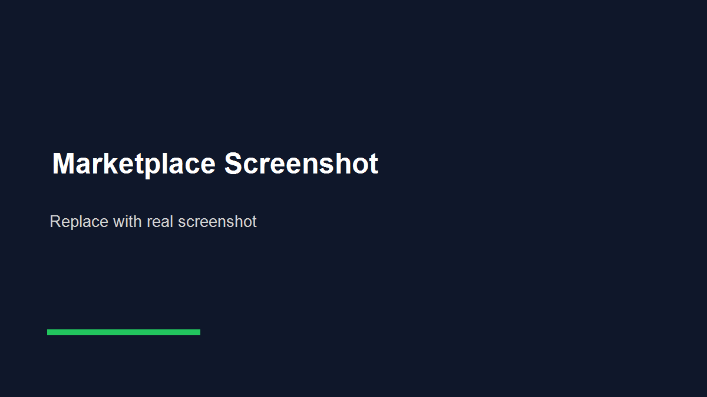
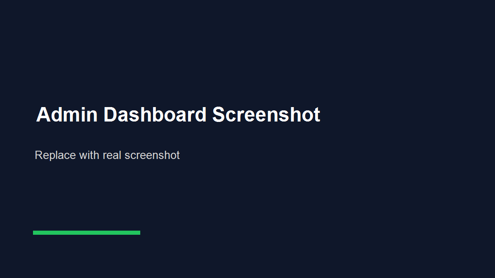
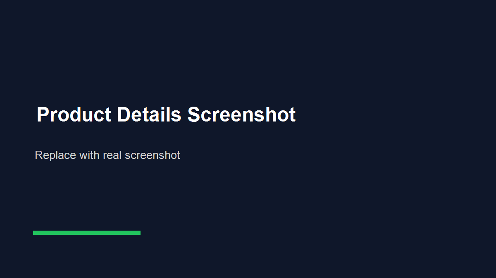

SokoHub Marketplace Documentation
Official guide for installing, configuring, customizing and launching the SokoHub Uganda classifieds marketplace.
Welcome
Thank you for purchasing SokoHub.
SokoHub is a classifieds marketplace for buying and selling local goods and services in Uganda. It is inspired by the classifieds marketplace model and ships with original branding, UI, seed data and copy.
The included app gives you marketplace discovery, advanced listing search, seller dashboards, admin screens, seeded users/listings, favorites, messaging, notifications, promotion packages and a production-ready Supabase SQL schema.
Main capabilities
- Browse and search listings by keyword, category, location, price and attributes
- Post listings with dynamic category-specific fields
- Manage listings from a seller dashboard
- Message sellers and reveal phone/WhatsApp contact actions
- Promote listings with demo payment packages
- Explore admin screens for users, ads, reports, reviews, payments and settings
Technology stack
- Next.js 16 App Router
- React 19
- TypeScript
- Tailwind CSS 4
- localStorage-backed demo state
- Supabase/PostgreSQL schema design
Requirements
| Item | Required? | Notes |
|---|---|---|
| Node.js | Yes | Use Node.js 20.x or newer, preferably the current LTS release. |
| npm | Yes | Included with Node.js. The project uses `package-lock.json`. |
| Next.js | Included | Installed through npm; no separate global install is required. |
| Supabase | Optional | Only needed if you plan to implement the included production schema. |
| Database | Optional | The demo app runs without a database; `supabase/schema.sql` is provided for production. |
| Prisma | No | This project does not currently use Prisma. |
| Environment variables | No | The current app does not read `process.env` values at runtime. |
Features
Marketplace
- ~142 seeded listings
- UGX pricing
- Category pages
- Listing detail pages
- Neighborhood/location seed data
Search & Filters
- Keyword search
- Category/subcategory filters
- Location, price and condition filters
- Category-specific attribute filters
- Sorting and pagination
Accounts
- Demo login/register
- Role labeling from email prefix
- Favorites
- Profile settings
- localStorage persistence
Seller
- Sell wizard
- Dynamic attributes
- Photo ordering and cover selection
- Dashboard ads table
- Promotions and packages
Contact
- Internal conversations
- WhatsApp deep links
- Phone reveal pattern
- Notifications
- Report listing/problem forms
Admin
- Users, ads and reports screens
- Categories/locations/content/settings
- Payments/subscriptions/promotions
- Analytics and audit-log screens
- Roles/security/support screens

Technology Stack
| Layer | Technology | Where |
|---|---|---|
| Framework | Next.js 16.3.8 | `package.json`, `src/app/*` |
| UI | React 19.2.8 | `package.json` |
| Language | TypeScript | `tsconfig.json`, `src/**/*.ts(x)` |
| Styling | Tailwind CSS 4 | `src/app/globals.css`, `postcss.config.mjs` |
| Icons | lucide-react | `package.json` |
| Demo state | React Context + localStorage | `src/context/AppContext.tsx` |
| Database design | Supabase/PostgreSQL SQL | `supabase/schema.sql` |
| Type checking | tsc / Next build | `npm run build` |
Installation
- Extract the files. Unzip the downloaded package and open the project folder.
- Install dependencies. This downloads Next.js, React, Tailwind and related packages listed in
package.json.npm install - Start the development server.
npm run devOpen
http://localhost:3000. - Try the demo. Visit
/ads?q=Toyota&location=Kampala, post at/sell, and log in with an email starting withadminto preview/admin. - Build for production.
npm run build - Start the production server.
npm run start
Useful commands
npm run lint
npx tsc --noEmit
npm run build
npm run startEnvironment Configuration
The current application does not require environment variables. It runs without `.env`, `.env.local`, Supabase keys, payment credentials, or database URLs.
process.env variables.Marketplace name, logo-adjacent text, support details, currency, SEO and contact settings are centralized in:
src/lib/config.tsThe admin settings screen saves an override to browser localStorage under sokohub_marketplace. To make permanent changes, edit defaultConfig in src/lib/config.ts.
Database Setup
The demo application does not connect to a live database. It ships with seed data in src/lib/seed/* and a production database blueprint in supabase/schema.sql.
Use the Supabase schema
- Create a Supabase project.
- Open the SQL editor.
- Copy the SQL from
supabase/schema.sql. - Run it to create tables, indexes, constraints and RLS policies.
The schema includes:
| Area | Tables |
|---|---|
| Users/roles | profiles, seller_verifications, admin_actions |
| Listings | categories, subcategories, category_attributes, ads, ad_images, ad_attributes |
| Engagement | favorites, conversations, messages, reports, reviews, notifications |
| Monetization | payments, promotions, subscriptions |
Authentication
Authentication is a client-side demo implemented in src/context/AppContext.tsx. Login and registration store a demo user in localStorage key sokohub_user.
| Behavior | Implementation |
|---|---|
| Login | /login calls login(email, name). An email starting with admin creates an admin-role demo user; mod creates a moderator. |
| Register | /register collects name, email and password, then routes into the demo flow. No password is validated or sent to a server. |
| Logout | Clears the local demo user from localStorage. |
| Password recovery | Not implemented. |
| Social auth | Not implemented. |
Admin / Dashboard Guide
Admin routes live under src/app/admin/*. The demo admin is available by logging in with an email that starts with admin.
Included admin screens
| Route | Screen |
|---|---|
/admin | Dashboard summary with users, listings, reports, payments and quick actions |
/admin/users | User list and detail screens |
/admin/ads | Ad moderation list and ad detail/moderation screen |
/admin/reports | Reported listings and issues |
/admin/reviews | Seller review management screen |
/admin/categories, /admin/locations | Taxonomy and location management screens |
/admin/payments, /admin/subscriptions | Payment and subscription overviews |
/admin/promotions | Promotion management and package setup |
/admin/settings | Marketplace/general/payment/security/moderation settings |
/admin/analytics, /admin/audit-logs | Reports, analytics and activity logs screens |

Seller / Vendor Guide
Seller functionality is exposed through /sell and /dashboard/*.
- Go to
/selland choose a category. - Choose a subcategory.
- Fill in title, description, price, negotiable status, photos and dynamic category fields.
- Set location and phone/WhatsApp details.
- Preview and submit. In the demo flow, submitted ads are represented as pending review items.
The seller dashboard includes /dashboard/ads, /dashboard/ads/create, /dashboard/ads/[id]/edit, /dashboard/ads/[id]/analytics, /dashboard/analytics, /dashboard/messages, /dashboard/payments, /dashboard/promotions and /dashboard/settings.
Buyer Guide
- Browse the homepage,
/adsor/ads/[category]. - Search by keyword and filter by location, price, condition, category and attributes.
- Sort results and paginate through listing pages.
- Open a listing at
/ad/[slug]to view photos, specs, seller and contact actions. - Use favorites, internal chat, report listing and contact flows.

Customization
| What to change | Where | Notes |
|---|---|---|
| Marketplace name, SEO, support details, currency | src/lib/config.ts | Edit defaultConfig. |
| Categories and locations | src/lib/data.ts | Categories drive navigation and filters. |
| Category-specific fields | src/lib/categoryFields.ts | Controls dynamic listing attributes. |
| Seed listings and sellers | src/lib/seed/ads.ts, src/lib/seed/sellers.ts | Replace or trim demo data. |
| Dummy listing imagery helper | src/lib/seed/images.ts | Used by seed data, sell form and editor defaults. |
| Promotion packages and gateways | src/lib/packages.ts | Demo package and gateway catalog. |
| Global styles | src/app/globals.css | Tailwind 4 global CSS. |
| Favicon/icon | src/app/icon.svg | Replace with your brand icon. |
| Header/footer/nav | src/components/Header.tsx, Footer.tsx, MobileNav.tsx | Update links and branding here. |
| Colors | Tailwind classes across src/**/*.tsx and src/app/globals.css | Primary green is commonly green-600. |
Project Structure
project/
├── src/
│ ├── app/ # App Router routes
│ ├── components/ # UI components
│ ├── context/ # AppContext demo state
│ └── lib/ # Types, catalog, config, seed data
├── public/ # Static assets
├── supabase/ # Production SQL schema design
├── documentation/ # Standalone buyer documentation
├── package.json
├── next.config.ts
├── postcss.config.mjs
├── tsconfig.json
└── README.mdThe standalone documentation lives in documentation/ and is intentionally separate from the Next.js App Router.
Deployment
Vercel
- Push the project to GitHub, GitLab or Bitbucket.
- Import the repository into Vercel.
- Use the default Next.js settings.
- Build command:
npm run build. - Output: Next.js default.
- Deploy.
Self-hosted Node.js
npm install
npm run build
npm run startServe the process behind your reverse proxy of choice. If you later connect Supabase, add the required environment variables in your hosting provider.
Updating the Application
- Back up your project files and database if you connected one.
- Replace the updated source files carefully.
- Reinstall dependencies with
npm install. - Re-run
npm run lintandnpm run build. - If using Supabase, apply only the SQL changes introduced by the update.
Troubleshooting
| Problem | Likely cause | Solution |
|---|---|---|
npm install fails | Node/npm version too old or cache issue | Use Node.js 20+, delete node_modules and package-lock.json only if you know what you are doing, then reinstall. |
| Dev server port in use | Another process uses port 3000 | Run npm run dev -- -p 3001. |
| Build fails | TypeScript/lint/runtime import issue | Run npx tsc --noEmit and fix the reported file/line. |
| Images broken | Remote host not allowed or service unavailable | Check next.config.ts remote patterns and the image helper in src/lib/seed/images.ts. |
| Admin not visible | Email does not start with admin | Log out and log in with e.g. admin@example.com. |
| Supabase tables missing | SQL was not run | Run supabase/schema.sql in the Supabase SQL editor. |
FAQ
Do I need a database to run the demo?
No. The app uses seed data and localStorage for demo state.
Is Prisma included?
No. Prisma is not used in this project.
Does it charge real money?
No. Promotion and payment screens are demo flows using catalog data in src/lib/packages.ts.
Can I use Supabase?
Yes as a production database target. Run supabase/schema.sql, then wire the app to Supabase Auth and tables.
Credits & Resources
| Asset/library | Purpose | Notes |
|---|---|---|
| Next.js | React framework | Installed via npm from package.json |
| React | UI library | Installed via npm |
| Tailwind CSS | Styling | Installed via npm, config in postcss.config.mjs |
| lucide-react | Icons | Installed via npm |
| TypeScript | Types | Installed via npm |
| Dummyimage | Product placeholder images | External dummy image service used by seed/demo image helper |
| Pravatar | Demo seller avatars | External dummy portrait service used in seed sellers |
| Supabase schema | Database design | supabase/schema.sql; not required for demo |
Support
For support, contact the author through your marketplace purchase channel. Support should cover installation, included features and basic usage of the product. Custom development, server administration, and unrelated third-party services may require separate assistance.
Changelog
Version 1.0.0
- Initial releaseNo sections match your search.